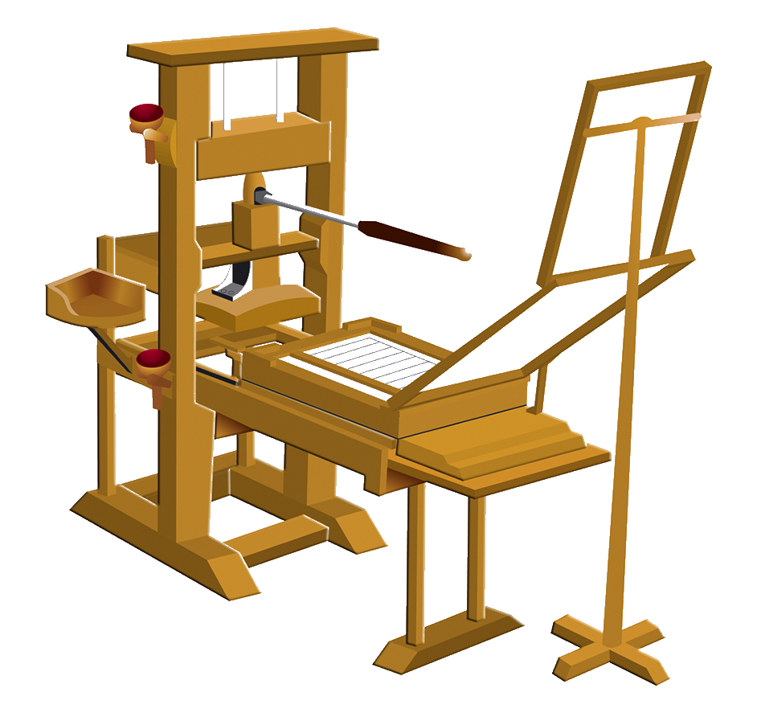

| Avances tecnológicos más relevantes de la historia | |||
|---|---|---|---|
| Avance | Año | Descripción | Imagen |
| La imprenta | 1440 |
Desde el nacimiento de la Historia con los primeros registros de la creatividad
humana en cuevas, pasando por la invención del papel, la invención de la imprenta es lo que permitió que el conocimiento se democratizara. Gracias a esto el pensamiento de grandes personajes comenzó a circular, a transformar poco a poco al mundo y a generar un cambio nunca antes visto. |
 |
| Electricidad | 1750 |
No se inventó, sino que se descubrió, ya que es una fuerza de la naturaleza. La
mayoría de las personas dan el crédito a Benjamin Franklin, uno de los mejores mejores científicos en la historia de la humanidad. |
 |
| Penicilina | 1928 |
La penicilina fue descubierta por error en 1928, pero fue hasta la Segunda
Guerra Mundial que su uso se convirtió en algo común para tratar heridas que antes de la penicilina eran mortales. su descubrimiento ha sido atribuido a Alexander Fleming, quien obtuvo un Premio Nobel en 1945. |
 |
| Semiconductores
eléctricos |
1960 |
Se les conoce como la base de toda la vida digital en el planeta. Hoy, la crea-
ción de los chips más sofisticados tiene lugar en los centros de educación e investigación más importantes del mundo. En 1947 William Shockley, inves- tigador también de los Laboratorios Bell y Walter Houser Brattain, junto a John Bardeen, desarrollaron el primer dispositivo semiconductor de germanio. |
|
| Internet | 1960's |
Durante toda la historia de la humanidad existió un mundo, pero con la llegada
del Internet, creamos uno completamente nuevo y hoy pasamos gran parte del tiempo en él. Internet no sólo fue un pequeño cambio en nuestras vidas, sino que revolucionó nuestro planeta en su totalidad. |
 |
| Vacunas | 1796 |
Hablando de revoluciones, las vacunas fueron un paso gigante para incrementar
la esperanza de vida, así como reducir la mortalidad infantil. Hoy son más nece- sarias que nunca y lamentablemente hay personas que dudan del octavo invento más importante para la humanidad. |
Para más avances tecnológicos visite este sitio.
glitter maker